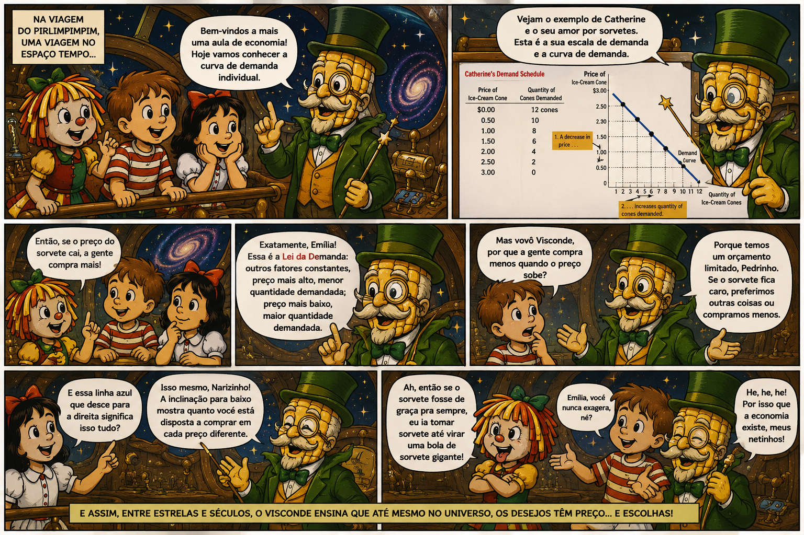
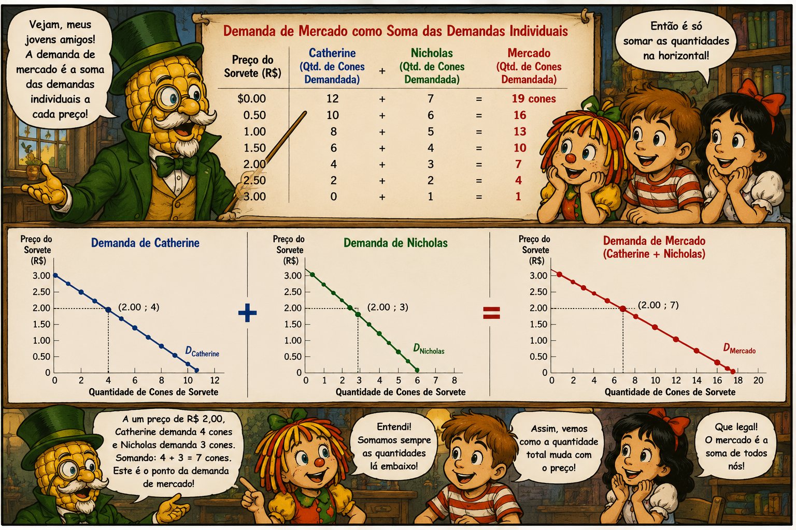
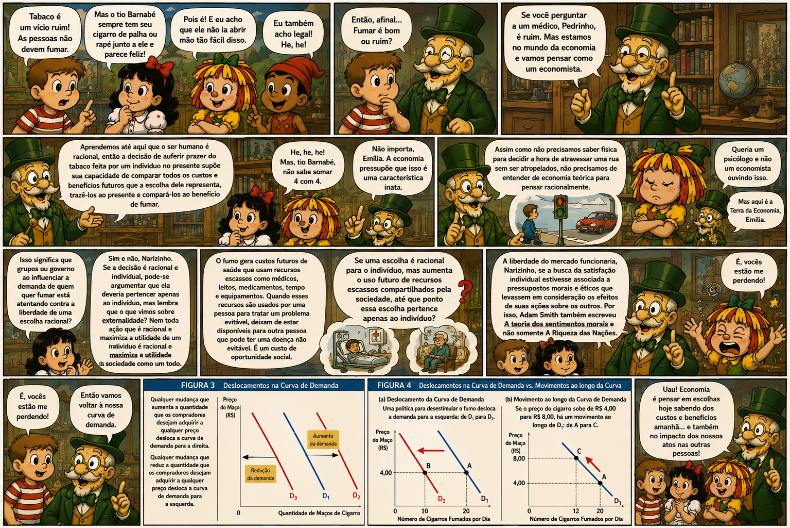
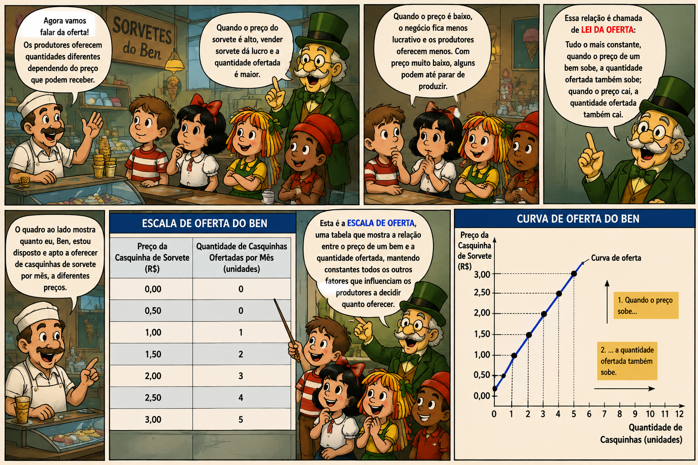
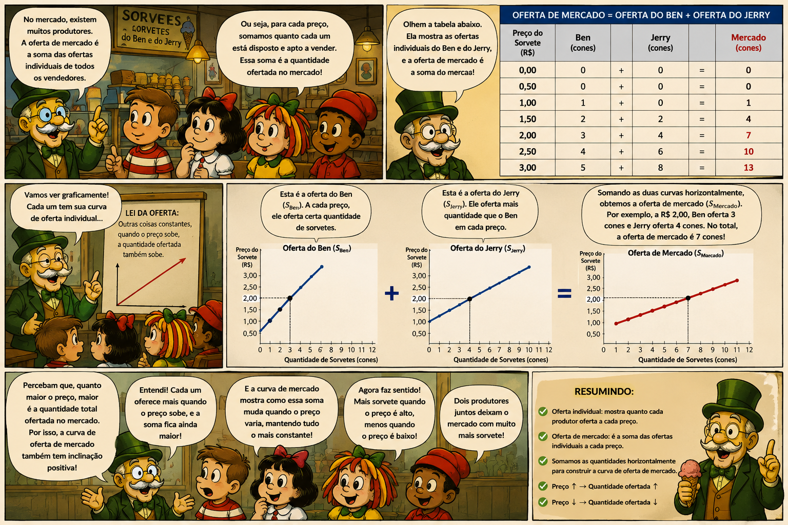
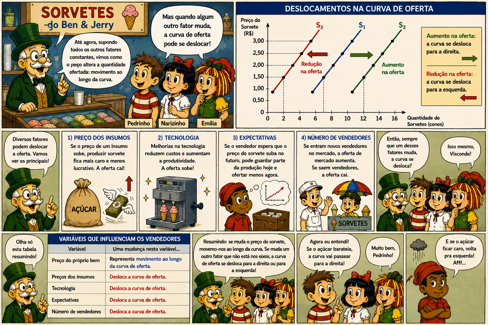
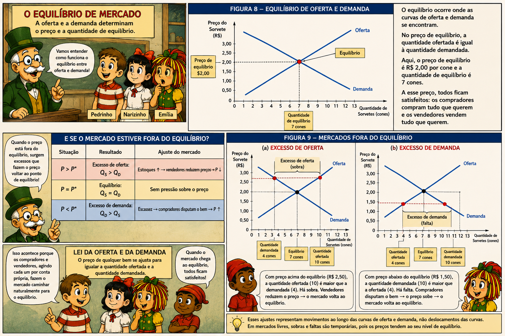
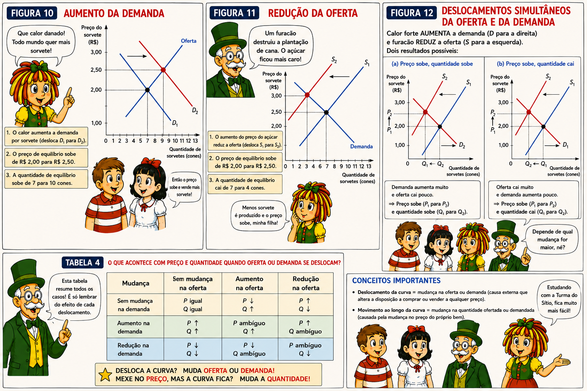

Aula 4 - As Forças de Mercado da Oferta e Demanda
04 — A curva de demanda: a relação entre preço e quantidade demandada
05 — demanda de mercado vs demanda individual
06 — Mudanças na curva de demanda
07 — A curva de oferta: a relação entre preço e quantidade ofertada
08 — Oferta de mercado vs oferta individual
09 — Mudanças na curva de oferta
11 — Três passos para analisar mdanças no equilíbio
Oferta e Demanda: como os mercados funcionam Eventos diferentes: mas o mesmo mecanismo econômico.
❄️ Frio intenso na Flórida → ↓ produção de laranjas → ↑ preço do suco de laranja
☀️ Verão na Nova Inglaterra → ↓ procura por férias no Caribe → ↓ preço dos hotéis
⚔️ Guerra no Oriente Médio → risco de ↓ oferta de petróleo → ↑ preço da gasolina
O que esses exemplos têm em comum?
Todos podem ser explicados pelas forças de OFERTA e DEMANDA.
Os termo oferta e demanda referem-se ao comportamento das pessoas ao interagir umas com as outras em um mercado competitivo.
Um mercado é o conjunto de compradores e vendedores de determinado bem ou serviço.
Compradores → Demanda Vendedores → Oferta
Mercados podem assumir diferentes formas
🏛 Mercados organizados
Compradores e vendedores se encontram em ambientes específicos, com regras e mecanismos bem definidos de negociação.
🍦 Mercados descentralizados
Compradores e vendedores estão dispersos e não precisam se encontrar fisicamente.
Mesmo sem um local único ou alguém determinando os preços, compradores e vendedores interagem e respondem às decisões uns dos outros.
Um mercado é definido pela interação entre compradores e vendedores, não necessariamente por um lugar físico.
Um mercado competitivo possui muitos compradores e vendedores, de modo que nenhum agente individual consegue determinar o preço de mercado.
Concorrência Perfeita:
É o caso extremo de um mercado competitivo. Pressupõe:
📦 Produtos homogêneos — os bens oferecidos são idênticos. 👥 Muitos compradores e vendedores — nenhum deles possui poder suficiente para influenciar o preço.
Agentes são Tomadores de preço (Price Takers)
Como nenhum agente controla o preço:
Compradores e vendedores → aceitam o preço determinado pelo mercado.
🌾 Exemplo: mercado de pão francês
Um padeiro isoladamente representa uma parcela tão pequena da oferta que não consegue alterar o preço do pão.
Estruturas de mercado: um continuum entre dois extremos:
| Concorrência perfeita | Monopólio | |
|---|---|---|
| Muitos vendedores | ←──────────────→ | Um único vendedor |
| Sem poder sobre o preço | ←──────────────→ | Poder sobre o preço |
Entre esses extremos existem outras estruturas de mercado.
Por que começar pela concorrência perfeita?
É uma simplificação que permite compreender com clareza como oferta e demanda determinam preços e quantidades.
O que é mercado?
Quais as características de um mercado competitivo perfeito?
Quantidade demandada (Qd)
Quantidade de um bem que os consumidores estão dispostos e aptos a comprar.
Lei da Demanda
Ceteris paribus, existe uma relação inversa entre preço e quantidade demandada:
Preço ↑ → Qd ↓ Preço ↓ → Qd ↑
Escala de Demanda
Tabela que relaciona cada preço à respectiva quantidade demandada.
Curva de Demanda
Representação gráfica da escala de demanda:
Preço (P) → eixo vertical Quantidade (Q) → eixo horizontal Inclinação negativa ↘
Importante: Uma variação sobre a curva de demanda mostra como a quantidade demandada varia quando o preço do próprio bem varia, mantendo os demais fatores constantes.

Demanda individual: Mostra quanto um consumidor deseja e pode comprar a cada preço.
Demanda de mercado: É a soma das demandas individuais de todos os consumidores de um mercado.
Como obter a demanda de mercado?
Para cada preço, somamos as quantidades demandadas por todos os consumidores:
\[ Q_D^{\text{Mercado}} = Q_D^{\text{Catherine}} + Q_D^{\text{Nicholas}} + \cdots + Q_D^{n} \]
Graficamente
As curvas de demanda individuais são somadas horizontalmente:
Mesmo preço → somamos as quantidades → demanda de mercado
A curva de demanda de mercado mostra a quantidade total que todos os consumidores estão dispostos e aptos a comprar a cada preço, ceteris paribus.

A curva de demanda relaciona preço e quantidade demandada, mantendo os demais fatores constantes, ceteris paribus.
Quando outro determinante da demanda muda, toda a curva se desloca:
Aumento da demanda → curva para a direita → a cada preço, consumidores desejam comprar mais.
Redução da demanda → curva para a esquerda ← a cada preço, consumidores desejam comprar menos.
⚠️ Não confunda
Mudança no preço do próprio bem → movimento ao longo da curva
Mudança em outro determinante → deslocamento da curva
O que desloca a Demanda?
| Determinante | Efeito sobre a demanda |
|---|---|
| 💰 Renda | Depende de o bem ser normal ou inferior |
| 🔄 Preço de bens substitutos | Preço do substituto ↑ → Demanda ↑ |
| 🔗 Preço de bens complementares | Preço do complemento ↑ → Demanda ↓ |
| ❤️ Gostos e preferências | Maior preferência → Demanda ↑ |
| 🔮 Expectativas | Expectativas sobre preços/renda futura alteram a demanda atual |
| 👥 Número de compradores | Mais consumidores → Demanda de mercado ↑ |
Bem normal: renda ↑ → demanda ↑ Bem inferior: renda ↑ → demanda ↓
Regra prática: se a variável que mudou não está nos eixos do gráfico (P e Q), provavelmente estamos falando de um deslocamento da curva.

Faça um exemplo de uma tabela de demanda mensal por pizza, um gráfico e a curva de demanda.
Dê um exemplo de algo que provocasse um deslocamento da curva de demanda.
Uma mudança no preço da pizza deslocaria a curva de demanda?
Quantidade ofertada (Qs): Quantidade de um bem que os produtores estão dispostos e aptos a vender.
Lei da Oferta: Ceteris paribus, existe uma relação direta entre preço e quantidade ofertada:
Preço ↑ → Qs ↑ Preço ↓ → Qs ↓
Por quê?
Preços mais elevados tornam a produção relativamente mais atrativa e lucrativa, incentivando os produtores a ofertarem maiores quantidades.
Escala de Oferta: Tabela que relaciona cada preço à respectiva quantidade ofertada.
Curva de Oferta: Representação gráfica da escala de oferta:
Preço (P) → eixo vertical Quantidade (Q) → eixo horizontal Inclinação positiva ↗
Importante: a curva mostra como a quantidade ofertada varia quando muda o preço do próprio bem, mantendo os demais fatores constantes.

Oferta individual: Mostra quanto um produtor está disposto e apto a vender a cada preço.
Oferta de mercado: É a soma das ofertas individuais de todos os produtores de um mercado.
Como obter a oferta de mercado?
Para cada preço, somamos as quantidades ofertadas por todos os produtores:
\[ Q_S^{\text{Mercado}} = Q_S^{\text{Ben}} + Q_S^{\text{Jerry}} + \cdots + Q_S^{n} \]
Graficamente:
As curvas de oferta individuais são somadas horizontalmente:
Mesmo preço → somamos as quantidades ofertadas → oferta de mercado
A curva de oferta de mercado mostra a quantidade total que todos os produtores estão dispostos e aptos a vender a cada preço, ceteris paribus.

Deslocamentos da Curva de Oferta: A curva de oferta relaciona preço e quantidade ofertada, mantendo os demais fatores constantes — ceteris paribus.
Quando outro determinante da oferta muda, toda a curva se desloca:
Aumento da oferta → curva para a direita → a cada preço, produtores desejam vender mais.
Redução da oferta → curva para a esquerda ← a cada preço, produtores desejam vender menos.
⚠️ Não confunda
Mudança no preço do próprio bem → movimento ao longo da curva
Mudança em outro determinante → deslocamento da curva
| Determinante | Efeito sobre a oferta |
|---|---|
| 🧱 Preço dos insumos | Insumos ↑ → Oferta ↓ |
| ⚙️ Tecnologia | Avanço tecnológico → Oferta ↑ |
| 🔮 Expectativas | Expectativas sobre condições futuras podem alterar a oferta atual |
| 👥 Número de vendedores | Mais produtores → Oferta de mercado ↑ |
Exemplo:
Preço do açúcar ↓ → Custo de produzir sorvete ↓ → Oferta ↑ → Curva para a direita
Regra prática: se mudou o preço do próprio bem, movemo-nos sobre a curva. Se mudou uma variável que não está nos eixos, deslocamos a curva.

← menuFaça um exemplo de uma tabela de oferta mensal por pizza, um gráfico e a curva de demanda.
Dê um exemplo de algo que provocasse um deslocamento da curva de oferta.
Uma mudança no preço da pizza deslocaria a curva de oferta?
O equilíbrio ocorre no ponto em que as curvas de oferta e demanda se encontram:
\[ Q_D^{\text{Mercado}} = Q_S^{\text{Mercado}} \]
**Preço de equilíbrio (P*)**: Preço no qual a quantidade demandada é igual à quantidade ofertada.
**Quantidade de equilíbrio (Q*)**:Quantidade comprada e vendida nesse preço.
No equilíbrio, não existe pressão para que o preço aumente ou diminua.
E se o mercado estiver fora do equilíbrio?
| Situação | Resultado | Ajuste do mercado |
|---|---|---|
| \(P > P^*\) | Excesso de oferta: \(Q_S > Q_D\) | Estoques ↑ → vendedores reduzem preços → \(P\) ↓ |
| \(P = P^*\) | Equilíbrio: \(Q_S = Q_D\) | Sem pressão sobre o preço |
| \(P < P^*\) | Excesso de demanda: \(Q_D > Q_S\) | Escassez → compradores disputam o bem → \(P\) ↑ |
Lei da Oferta e da Demanda: O preço tende a se ajustar de forma a equilibrar a quantidade ofertada e a quantidade demandada.
Excesso de oferta → P ↓ → Qd ↑ e Qs ↓ → Equilíbrio
Excesso de demanda → P ↑ → Qd ↓ e Qs ↑ → Equilíbrio
⚠️ Importante: esses ajustes representam movimentos ao longo das curvas de oferta e demanda — não deslocamentos das curvas.

← menuQuando um evento desloca a oferta, a demanda ou ambas, surgem novos preço e quantidade de equilíbrio.
🔎 Método dos 3 passos
1. Identifique qual curva é afetada → Oferta, Demanda ou ambas 2. Determine a direção do deslocamento → Direita ou Esquerda 3. Compare o novo equilíbrio → o que acontece com P e Q?
| Mudança | Preço de equilíbrio | Quantidade de equilíbrio |
|---|---|---|
| Demanda ↑ → | ↑ | ↑ |
| Demanda ↓ ← | ↓ | ↓ |
| Oferta ↑ → | ↓ | ↑ |
| Oferta ↓ ← | ↑ | ↓ |
| Demanda ↑ + Oferta ↓ | ↑ | ? |
| Demanda ↓ + Oferta ↑ | ↓ | ? |
Quando oferta e demanda mudam simultaneamente, o efeito sobre uma das variáveis pode ser ambíguo: depende da magnitude relativa dos deslocamentos.
Lembrete: deslocamento da curva = mudança na oferta/demanda; movimento ao longo da curva = mudança na quantidade ofertada/demandada.

Mostre o que acontece com o mercado de pizza, se o preço dos tomates sobem.
Mostre o que acontece com o mercado de pizza, se o preço dos hamburgueres caem.
O modelo de oferta e demanda vai muito além do mercado de sorvetes: ele ajuda a compreender como uma economia de mercado coordena milhões de decisões descentralizadas.
O papel dos preços
Recursos são escassos → escolhas precisam ser feitas → preços ajudam a coordená-las
🛒 Consumidores: preços ajudam a determinar quem compra e quanto compra. 🏭 Produtores: preços sinalizam o que e quanto produzir. 👷 Trabalhadores: salários — o preço do trabalho — ajudam a direcionar a alocação do trabalho. 🌎 Sociedade: o sistema de preços ajuda a alocar recursos escassos entre usos concorrentes.
Em uma economia de mercado, preços funcionam como sinais que coordenam as decisões de compradores e vendedores.
A “mão invisível” de Adam Smith
Se a mão invisível coordena a economia de mercado, o sistema de preços é o mecanismo que transmite os sinais necessários para essa coordenação.
Oferta + Demanda → Preços → Incentivos → Decisões → Alocação de recursos
Questões de Concurso — Oferta, Demanda e Equilíbrio
Questão 1 — FGV — AL-GO — Economista — 2026
Em um mercado competitivo de um bem normal, com curva de oferta positivamente inclinada, ocorre um aumento da renda dos consumidores, ceteris paribus.
Assinale a alternativa correta.
A demanda desloca-se para a direita, aumentando o preço e a quantidade de equilíbrio.
Ocorre apenas movimento ao longo da curva de demanda.
A demanda desloca-se para a esquerda, reduzindo o preço e aumentando a quantidade.
A renda não afeta a demanda porque não aparece nos eixos do gráfico.
O aumento da renda necessariamente transforma o produto em um bem inferior.
Questão 2 — FGV — Câmara dos Deputados — 2023
Considere dois mercados perfeitamente competitivos, \(X\) e \(Y\), cujos bens são substitutos.
Ceteris paribus, ocorre uma redução no preço do bem \(X\).
O que ocorre no mercado do bem \(Y\)?
Redução da demanda.
Redução da oferta.
Movimento ao longo da curva de demanda.
Aumento da demanda.
Aumento da oferta.
Questão 3 — FGV — ALE-PR — Economista — 2024
Considere um mercado com:
\[ Q_S = 1 + 2P \]
\[ Q_D = 4-P \]
Posteriormente, ocorre um choque positivo de demanda, deslocando paralelamente a demanda em 3 unidades:
\[ Q_D' = 7-P \]
O preço de equilíbrio inicial e a quantidade de equilíbrio após o choque são, respectivamente:
1 e 2.
1 e 5.
2 e 1.
2 e 3.
1 e 3.
Questão 4 — FGV — IBGE — 2017
Considere:
\[ Q_D = 10-P \]
e
\[ Q_S=P \]
O governo determina que o preço seja:
\[ P=4 \]
Qual será o excesso de demanda nesse mercado?
0,25 unidade.
0,5 unidade.
1 unidade.
2 unidades.
5 unidades.
Questão 5 — FGV — EPE — 2024
Considere as seguintes afirmações sobre um mercado competitivo:
I. A curva de oferta apresenta normalmente inclinação positiva: preços maiores estão associados, ceteris paribus, a maiores quantidades ofertadas.
A curva de demanda apresenta normalmente inclinação negativa: preços menores estão associados, ceteris paribus, a maiores quantidades demandadas.
No equilíbrio de mercado:
\[ Q_D = Q_S \]
e, na ausência de novos choques, não existe pressão para alteração do preço.
Está correto o que se afirma em:
I, apenas.
I e II, apenas.
I e III, apenas.
II e III, apenas.
I, II e III.